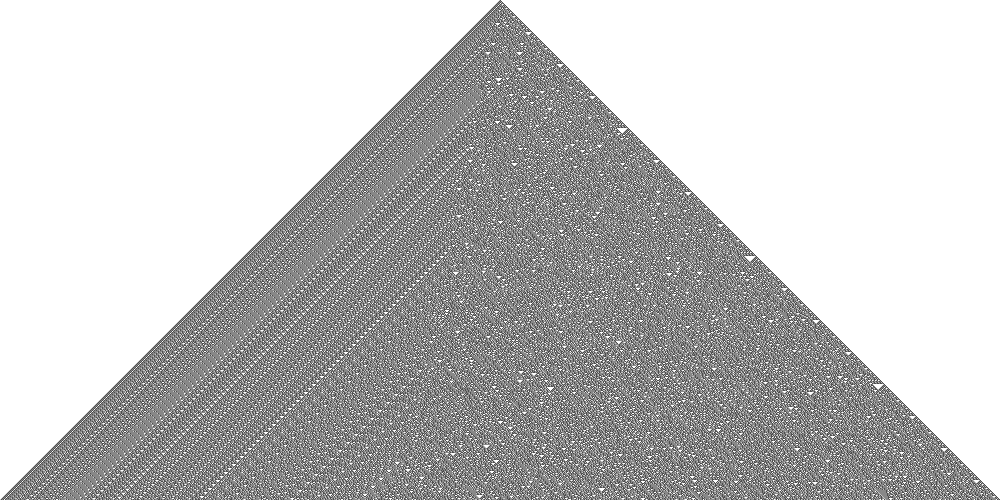

Wolfram Rule 30
The Rule
Every cell's next state depends only on itself and its two neighbors. Rule 30 in binary is
00011110 — out of the 8 possible 3-cell patterns,
four produce a live cell next generation. Starting from a single cell,
this simple rule generates a pattern with no repeating structure — chaotic enough that Wolfram Research
uses it as a random number generator, and its left half is provably as unpredictable as true randomness
appears to be (it's also the pattern on the Mathematica/Wolfram logo).
Try It Yourself
The top row is the seed — a single lit cell. Toggle the cells in the next row to predict what Rule 30 produces, then press Show step to reveal the real values and check your guesses. Correct cells get a green ring, wrong ones red. Then predict the row after that.
Explore
Zoom In
A finished run — 1000 generations from a single cell, rendered at 4000×2000. Drag to pan, scroll or pinch to zoom.
